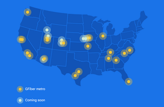
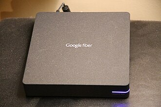
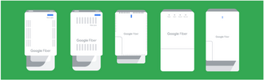
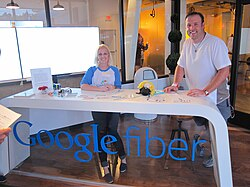
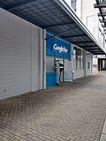
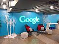
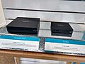
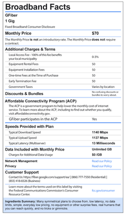

Google Fiber
Source: https://en.wikipedia.org/wiki/Google_Fiber
Category: products_hardware
Depth: 1
Summary
Google Fiber, Inc., sometimes stylized as GFiber, is a fiber broadband Internet service operated by Alphabet Inc. servicing a growing number of households in cities in 19 states across the United States. In mid-2016, Google Fiber was estimated to have about 453,000 broadband customers.
Images








Full Article
Broadband network from Alphabet in the United States
Not to be confused with Google Fi Wireless.
Google Fiber, Inc., sometimes stylized as GFiber, is a fiber broadband Internet service operated by Alphabet Inc. servicing a growing number of households in cities in 19 states across the United States. In mid-2016, Google Fiber was estimated to have about 453,000 broadband customers.
The service was first introduced in 2012 in the Kansas City metropolitan area, growing to include twenty Kansas City area suburbs within three years. Initially proposed as an experimental project, Google Fiber was announced as a viable business model in December 2012, when Google executive chairman Eric Schmidt stated "It's actually not an experiment, we're actually running it as a business", at The New York Times' DealBook Conference.
Google Fiber announced expansion to Austin, Texas, and Provo, Utah, in April 2013, and subsequent expansions in 2014 and 2015 to Atlanta, Charlotte, Research Triangle, Nashville, Salt Lake City, and San Antonio. GFiber resumed expansion and by early 2024, GFiber also served Huntsville (Alabama), Maricopa County (Arizona), Des Moines and West Des Moines (Iowa), Omaha (Nebraska) among others.
In August 2015, Google announced its intention to restructure the company, moving less central services and products into a new umbrella corporation, Alphabet Inc. As part of this restructuring plan, Google Fiber would become a subsidiary of Alphabet and would possibly become part of the Access and Energy business unit.
In October 2016, all expansion plans were put on hold, and some jobs were cut. Google said it would continue to provide Google Fiber service in the cities where it was already installed. Since then, GFiber acquired Webpass to add presence in 5 additional states. In March 2022, Google Fiber announced it would bring high speed internet to the Des Moines, Iowa, metro area, making it the first expansion in five years. GFiber has resumed very active expansion in several new states.
In August 2022, Google Fiber announced it would expand into 22 metro areas in five states (Arizona, Colorado, Idaho, Nebraska, and Nevada), including previously announced expansions into Mesa, Arizona, and Colorado Springs, Colorado, based on where it felt speeds were lagging. It also announced additional investment in North Carolina. CNET characterized this an example of fast fiber winning the broadband wars. In October 2023, Google Fiber rebranded to GFiber and announced plans to begin offering 20Gig internet and Wi-Fi 7 hardware in the near future.
On March 12, 2026, the company announced it would be merging with Astound Broadband. The combined company will be majority-owned by investment company Stonepeak. The transaction is expected to close by the end of 2026.
Services
Google Fiber offers three symmetrical speed internet options as of January 2025. They are called Core, Home, and Edge.
Google Fiber in the past offered five options, depending on location: Fiber 1 Gig, 2 Gig, 5 Gig, 8 Gig and an option for home phone service. All speed tiers included one terabyte of storage on Google Drive service.
| Plan | Core | Fiber 2 Gig (legacy) | Home | Fiber 5 Gig (legacy) | Edge |
|---|---|---|---|---|---|
| Internet bandwidth (download) | 1 Gbit/s | 2 Gbit/s | 3 Gbit/s | 5 Gbit/s | 8 Gbit/s |
| Internet bandwidth (upload) | 1 Gbit/s | 1 Gbit/s (2 Gbit/s select markets) | 3 Gbit/s | 5 Gbit/s | 8 Gbit/s |
| Construction fee | None | None | None | None | None |
| Monthly recurring cost | $70 | $100 | $100 | $125 | $150 |
| Storage included | None | 1TB Google Drive | None | 1TB Google Drive | None |
| Hardware included | Multi-Gig Wi-Fi 6E router Up to 1 Mesh Extender | Wi-Fi 6 router 1 Mesh Extender | Multi-Gig Wi-Fi 6E router Up to 2 Mesh Extenders Battery Backup (optional) | Wi-Fi 6 router Includes up to 2 Mesh Extenders | Multi-Gig Wi-Fi 6E router Up to 2 Mesh Extenders Battery Backup |
New updated plans and speeds were unveiled in early 2025. 1TB free Google Drive was discontinued.
Google also offers free Google Fiber Internet connectivity in each of its markets to select public and affordable housing properties.
Google Fiber participated in the FCC's Affordable Connectivity Program with discounted rates until its cancellation in June 2024.
In February 2020, Google Fiber stopped offering TV service directly to new customers. Instead, during the sign-up process for Google Fiber, customers are presented with promotions for three virtual MVPD services: sister company YouTube TV, as well as FuboTV and (later) Philo. TV service was maintained for existing clients until early 2022.
Distribution
To avoid underground cabling complexity for the last mile, Google Fiber relies on aggregators dubbed Google Fiber Huts.
From these Google Fiber Huts, the fiber cables travel along utility poles into neighborhoods and homes, and stop at a Fiber Jack (an optical network terminal or ONT) in each home.
The estimated cost of wiring a fiber network like Google Fiber into a major American city was $1 billion in 2016.
First city selection process
The initial location was chosen following a competitive selection process. Over 1,100 communities applied to be the first recipients of the service. Google originally stated that they would announce the winner or winners by the end of 2010; however, in mid-December, Google pushed back the announcement to "early 2011" due to the number of applications.
The request form was simple, and some have argued that it was too straightforward. This led to various attention-getting behaviors by those hoping to have their town selected. Some examples are given below:
- Greenville, South Carolina, utilized 1,000 of their citizens and glow sticks to create "The World's First and Largest People-Powered Google Chain". From an aerial view, the title "Google" was colorfully visible.
- Topeka, Kansas, temporarily renamed itself "Google".
- A small plane bearing a banner reading "Will Google Play in Peoria, IL?" flew over the Google campus in Mountain View, California.
- The mayor of Duluth, Minnesota, jokingly proclaimed that every first-born child will be named either Google Fiber or Googlette Fiber.
- The city of Rancho Cucamonga, California, dubbed their city, "Rancho Googlemonga".
- One of the islands in Sarasota, Florida, was temporarily renamed "Google Island".
Municipalities and citizens also uploaded YouTube videos to support their bids. Some examples:
- A YouTube video in support of Sarasota, Florida, used the Bobby McFerrin song "Don't Worry, Be Happy". A video for Sarasota was uploaded through Facebook's video service.
- Comedian and United States Senator Al Franken made a YouTube video to support the bid of Duluth, Minnesota.
- Ann Arbor, Michigan, has its own YouTube channel featuring a David Letterman-style Top Ten list delivered by town VIPs such as Mayor John Hieftje and University of Michigan President Mary Sue Coleman. Ann Arbor also held a city-wide GoogleFest, kicking off with a gathering of hundreds of participants dancing and chanting "Ann Arbor Google Fiber, ain't Nothing any finer."
Operating locations
In 2011, Google launched a trial in a residential community of Palo Alto, California. On March 30 of the same year, Kansas City, Kansas, was selected as the first city to receive Google Fiber. In 2013, Austin, Texas, and Provo, Utah, were announced as expansion cities for Google Fiber on April 9 and 17 respectively.
- Texas
- Austin
- San Antonio
- Utah
- Logan
- Provo
- Salt Lake City
- Washington
- Seattle
- Nebraska
- Bellevue
- Omaha
- North Carolina
- Charlotte
- The Triangle
- Wilmington (upcoming as of 2026)
- Nevada
- Las Vegas (launched March 2026)
- South Carolina
- Fort Mill
- Tega Cay
- Tennessee
- Franklin
- Murfreesboro
- Nashville
- Smyrna
- Illinois
- Chicago
- Idaho
- Pocatello
- lowa
- Council Bluffs
- Des Moines
- Norwalk (upcoming as of 2026)
- West Des Moines
- Kansas/Missouri
- Kansas City
- Lawrence (upcoming as of 2026)
- Jefferson City
- Colorado
- Adams County (upcoming as of 2026)
- Broomfield County (upcoming as of 2026)
- Douglas County (upcoming as of 2026)
- Denver
- Golden (upcoming as of 2026)
- Lakewood
- Westminster
- Wheat Ridge (upcoming as of 2026)
- Florida
- Miami
- Georgia
- Atlanta
- Alabama
- Huntsville
- Arizona
- Chandler
- Mesa
- Queen Creek
- Tempe (upcoming as of 2026)
- California
- Oakland
- Orange County
- San Diego
- San Francisco
Stanford University
- In summer 2011, Google launched a free trial of its forthcoming fiber service in one residential community near Stanford University in Palo Alto, California.
Kansas City, Kansas, and Kansas City, Missouri
Google found that affluent neighborhoods in Kansas City signed up for the faster service while those in poorer neighborhoods did not sign up for even the free option. In response to this digital divide, Google sent a team of 60 employees to the underserved areas to promote the Google Fiber service. Additionally, Google offered micro-grants to community organizations that want to start up digital literacy programs in Kansas City.
The following are chronological announcements of service in the Kansas City metropolitan area. Neighborhoods are said to be selected based on demand:
- Kansas City, Kansas – On March 30, 2011, Kansas City, Kansas, was selected from over 1,100 applicants to be the first Google Fiber community.
- Kansas City, Missouri – On May 17, 2011, Google announced the decision to include Kansas City, Missouri, thus offering service to both sides of the state line. The network became available to residents in September 2012.
- Olathe, Kansas – On March 19, 2013, Google announced that the project would be expanded to Olathe.
-
North Kansas City, Missouri – On April 19, 2013, Google announced that they were to begin a 20-year lease on dark fiber in the existing LiNKCity fiber network in North Kansas City. The original news article was incomplete, and later articles clarified the lease. Independent of Google's network, the system in North Kansas City will also be upgraded to gigabit capacity and managed by a local company based out of North Kansas City.
-
Shawnee, Kansas – May 2, 2013
- Raytown, Missouri – May 3, 2013
- Grandview, Missouri – May 7, 2013
- Gladstone, Missouri – May 13, 2013
- Raytown, Missouri – May 22, 2013
- Lee's Summit, Missouri – June 21, 2013
- Mission, Kansas – June 27, 2013
- Prairie Village, Kansas – August 5, 2013
- Leawood, Kansas – August 19, 2013 – (cancelled July 24, 2014)
- Merriam, Kansas – August 26, 2013
- Roeland Park, Kansas – September 3, 2013
- Mission Hills, Kansas – September 9, 2013
- Fairway, Kansas – September 9, 2013
- Lenexa, Kansas – September 17, 2013
Google placed deployment in Overland Park, Kansas, on indefinite hold in October 2013, following delays by the City Council over concerns about whether an indemnification clause that Google required might force the city to repair any damage caused by the project. As of July 2014, Overland Park's City Council had voted on a deal that would allow for Google Fiber. Soon after, the city appeared on Google Fiber's website.
Austin, Texas
- On April 9, 2013, it was announced that Austin, Texas, would become a Google Fiber City.
- On October 15, 2014, it was announced that Austin signups for Google Fiber would start in December 2014.
- On December 3, 2014, Google started taking registrations from residents and small businesses.
- The Google Fiber store in Austin was closed by 2023; however, the buildout continued in the city.
-
5 Gig launched in the Austin Market on August 21, 2023.
-
Google Fiber store entrance, Austin
- Google Fiber store, Austin
- Google Fiber store, Austin
- TV box and Network box at Google Fiber store, Austin
Utah
- Provo, Utah – On April 17, 2013, it was announced that Provo would become the third Google Fiber City. Expansion of Google Fiber service to Provo, Utah will be accomplished through an agreement with the City of Provo to allow Google to acquire the existing fiber network known as "iProvo". The agreement will allow Google to purchase the iProvo network for $1, while requiring Google to upgrade the aging network to gigabit capacity, offer free gigabit service to 25 local public institutions, and offer 5 Mbit/s service to every home in the city for free after a $300 activation fee.
- Salt Lake City - On March 24, 2015, Google announced that Google Fiber would expand into Salt Lake City, Utah. Service became available for signup on August 24, 2016.
- Millcreek: On July 14, 2020, Google announced that Google Fiber would expand into Millcreek, Utah, to serve its first Millcreek customers in early 2021. On December 28, 2021, Google posted a blog article reflecting on the year 2021. In this article, they mentioned that the following cities had begun offering service sometime in 2021: Millcreek, South Salt Lake, Holladay, and Taylorsville.
- South Salt Lake: On February 25, 2021, Google announced that Google Fiber would expand into South Salt Lake, Utah. By July 26, 2021, Google had announced that construction was underway and expected to be completed by early 2022. On December 28, 2021, Google posted a blog article reflecting on the year of 2021. In this article, they mentioned that the following cities had begun offering service sometime in 2021: Millcreek, South Salt Lake, Holladay, and Taylorsville.
- Holladay: On March 11, 2021, Google announced that Google Fiber construction had begun in Holladay, Utah. Plans to allow Google Fiber expansion to the city were initially approved in November 2020. Construction is expected to conclude in early 2022. On December 28, 2021, Google posted a blog article reflecting on the year 2021. In this article, they mentioned that the following cities had begun offering service sometime in 2021: Millcreek, South Salt Lake, Holladay, and Taylorsville.
- Taylorsville: On April 22, 2021, Google announced that Google Fiber would expand into Taylorsville, Utah. By July 26, 2021, Google had announced that construction was underway and expected to be completed by early 2022. On December 28, 2021, Google posted a blog article reflecting on the year of 2021. In this article, they mentioned that the following cities had begun offering service sometime in 2021: Millcreek, South Salt Lake, Holladay, and Taylorsville.
- Sandy - On May 5, 2021, Google announced that Google Fiber would expand into Sandy, Utah. The initial timeline was to complete an "initial footprint" within two years. On March 22, 2022, Google announced that it had begun offering service in Sandy and North Salt Lake.
- North Salt Lake - On July 26, 2021, Google announced that Google Fiber would expand into North Salt Lake, Utah. Construction efforts were expected to begin soon after, with a completion date sometime in early 2022. On March 22, 2022, Google announced that it had begun offering service in Sandy and North Salt Lake and that it was approved to begin construction in White City, Draper, Riverton, Springville, West Bountiful, and West Jordan.
Charlotte, North Carolina
On July 12, 2016, sign-ups opened in Highland Creek.
On October 4, 2016, sign-ups opened in Prosperity Village.
Atlanta
In the original announcement of 2015, the following areas were announced:
- Avondale Estates
- Brookhaven
- Castleberry Hill
- College Park
- Decatur
- East Point
- Hapeville
- Sandy Springs
- Smyrna
- Vine City
In August 2016, sign-ups were opened.
Research Triangle, Raleigh–Durham, North Carolina
In the original announcement of 2015, the following areas of the Research Triangle of Raleigh–Durham, North Carolina were announced:
On September 13, 2016, sign-ups opened.
Nashville, Tennessee
The areas initially announced in February 2015 were:
As of December 2016, construction is underway. Sign-ups are open.
As of August 2017, Google Fiber announced that the Sylvan Park neighborhood in West Nashville had Google Fiber service officially operating, making Nashville a city with Google Fiber service.
Huntsville, Alabama
On February 22, 2016, Google announced that Google Fiber would expand into Huntsville, Alabama. Google Fiber announced it would start offering high-speed Internet, TV and telephone service in north Huntsville on May 23, 2017.
On April 2, 2018, Huntsville Utilities continues to build fiber in Southeast Huntsville, which has been turned over to Google Fiber to service.
West Des Moines, Iowa
Google Fiber announced it would start offering high-speed Internet, TV, and telephone service in northeast West Des Moines on March 22, 2021.
Announced future locations
Utah
- Woods Cross: On July 26, 2021, Google announced that Google Fiber would expand into Woods Cross, Utah. This service will be available to Woods Cross City residents in the spring of 2022.
- South Jordan: On October 8, 2021, Google announced that Google Fiber would expand into South Jordan, Utah. The goal is to have "service in some areas in early 2022".
- Springville: On October 20, 2021, Google announced that Google Fiber would expand into Springville, Utah. Construction is expected to begin in spring 2022 and last through 2023.
- Riverton: On December 14, 2021, Google announced that Google Fiber would expand into Riverton, Utah. Construction is expected to begin in the second half of 2022, and they expect "to start serving customers in Riverton in late 2022 or early 2023."
- Draper: On February 2, 2022, Google announced that Google Fiber would expand into Draper, Utah. Infrastructure construction will begin in spring 2022 with an estimated completion time of one year.
- West Jordan: On February 24, 2022, Google announced that Google Fiber would expand into West Jordan, Utah. Construction is slated to begin later in 2022, with the first West Jordan customers expected to come online around early 2023.
California expansion
On January 27, 2015, Google announced that Google Fiber would expand into additional markets:
San Antonio, Texas
On April 14, 2016, Google sent a blast email to early adopters of Google Fiber announcing that they were indeed behind the visible construction across San Antonio, Texas. A few details were given about the vast extent of the construction that was being undertaken, Google was in the process of deploying about 4,000 linear miles (6,500 km) of fiber-optic cable throughout San Antonio. In advance of the imminent deployment of the new fiber network the direct competitors of Google Fiber, AT&T U-Verse, Time Warner Cable, and Grande Communications, dropped prices and increased the speeds of their networks. San Antonio, the seventh-largest city in the nation, was the largest project that Google Fiber had taken on to date.
On August 5, 2015, expansion into San Antonio was announced. As of December 2016, construction was underway. However, in January 2017, construction was halted pending concerns about the placement of Google Fiber huts in city parks. Mayor Ivy Taylor expressed commitment to working with Google to address community concerns and allow the project to continue.
As of May 9, 2019, Google Fiber had micro-trenched 600 miles of fiber in San Antonio neighborhoods. City staff said the majority was on the far Northwest and Northeast sides, including the pilot area in the Westover Hills neighborhood. After closing service in Louisville, Kentucky, the company said it learned from its challenges and refined its micro-trenching program to go deeper. According to the company, its Louisville microtrenching was as shallow as two inches. City staff said San Antonio's trenching depth was 6–8 inches.
Closed and former locations
Louisville, Kentucky
In April 2017, Google announced that Google Fiber would start construction in Louisville, Kentucky. Google Fiber got the service to sections of Louisville in five months after it first announced that it would be coming to the city—faster than it had ever deployed before—by using shallow trenching. In February 2019 Google announced it would shut down service on April 15. Before departing, Google Fiber service was criticized for disruptive infrastructure installations and poor workmanship. Google agreed to pay $3.8 million for clean up.
Possible future expansion
2014
In February 2014, Google announced it had "invited cities in nine metro areas around the U.S.—34 cities altogether—to work with us to explore what it would take to bring them Google Fiber."
The remaining metropolitan areas where Fiber has not yet begun constructing are: Phoenix, Portland, San Antonio and San Jose. Of these, the following have yet to be selected by Google for fiber deployments:
- Arizona – Phoenix, Scottsdale, Tempe. These plans were put on hold in October 2016.
- California – These plans were put on hold in October 2016.
- San Jose
- Santa Clara
- Sunnyvale
- Mountain View
- Palo Alto
- Oregon – Portland, Beaverton, Hillsboro, Gresham, Lake Oswego, Tigard These plans were put on hold in October 2016.
On April 15, 2014, Google began polling business users on their need for gigabit service, saying they would be "conducting a pilot program where we'll connect a limited number of small businesses to our network".
2015
On September 10, 2015, Google tweeted that it was exploring the possibility of adding Irvine and San Diego, California, as future expansion cities.
On October 28, 2015, Jill Szuchmacher, Google Fiber Director of Expansion, announced ongoing negotiations with local governments in Jacksonville, Florida, Tampa, Florida, and Oklahoma City, Oklahoma. Szuchmacher stated that Google is interested in the installation of Google Fiber networks in each of the cities and that construction could take up to eighteen months once the project is underway. In October 2016, those plans were put on hold.
On December 8, 2015, the Seattle City Council's Director of Communications replied to a tweet indicating that the city was in the process of applying for Google Fiber service. On December 8, 2015, Jill Szuchmacher said the company will work with Chicago city leaders to collect information and study factors that could affect construction of Google Fiber.
2016
On June 14, 2016, Jill Szuchmacher said the company will work with Dallas mayor Mike Rawlings to try to bring another hub to Texas.
In October 2016, all expansion plans were put on hold, and some jobs were cut. Google Fiber will continue to provide service in the cities where it is already installed.
2017
In 2017 Google Fiber launched in three new cities: Huntsville, Alabama; Louisville, Kentucky; and San Antonio, Texas. It also began to heavily rely on shallow trenching, a new method of laying cables that cuts a small groove in the street or sidewalk, lays the fiber in that groove, and backfills it with a special epoxy, to expedite the construction process. In at least one case, cables were buried too shallow and were ripped up by repaving.
Acquisition of Webpass
On June 22, 2016, Google Fiber bought Webpass, an Internet service provider that has been in business for 13 years and specializes in high-speed Internet for business and residential customers. They have a large presence[clarification needed] in California and specifically the Bay Area as well as San Diego, Miami, Miami Beach, Coral Gables, Chicago, Denver, and Boston. The deal closed in October 2016.
Technical specifications
Google Fiber provides an Internet connection speed of up to eight gigabits per second (8,000 Mbit/s) for download and eight gigabit per second (8,000 Mbit/s) upload. Google Fiber says its original 1 Gbit/s download service allows for the download of a full movie in less than two minutes.
The GFiber Nutrition Label was created in anticipation of the FCC requiring all internet providers to display their product info in a standardized format. With the FCC requirement of consumer labels, all internet providers will be required to be more transparent with their fees, promotional pricing, typical speeds, and latency.
Prohibition of servers
When first launched, Google Fiber's terms of service stated that its subscribers were not allowed to create any type of server:
"Your Google Fiber account is for your use and the reasonable use of your guests. Unless you have a written agreement with Google Fiber permitting you do so, you should not host any server using your Google Fiber connection, use your Google Fiber account to provide a large number of people with Internet access, or use your Google Fiber account to provide commercial services to third parties (including, but not limited to, selling Internet access to third parties)."
The Electronic Frontier Foundation criticized the practice, noting the ambiguity of the word "server" which might include such standard application protocols as BitTorrent, and Spotify, as well as the effect of and on IPv6 adoption due its lack of NAT technical limitations on network servers, but also noted similar prohibitions from other ISPs such as Comcast, Verizon, Cox, and AT&T.
In October 2013, the acceptable use policy for Google Fiber was modified to allow "personal, non-commercial use of servers".
April Fools' hoaxes
See also: List of Google April Fools' Day jokes
On April Fools' Day 2007, Google hosted a signup for Google TiSP offering "a fully functional, end-to-end system that provides in-home wireless access by connecting your commode-based TiSP wireless router to one of the thousands of TiSP Access Nodes via fiber-optic cable strung through your local municipal sewage lines."
On April Fools' Day 2012, Google Fiber announced that its product was an edible Google Fiber bar instead of fiber-optic Internet broadband. It is stated that the Google Fiber bar delivers "what the body needs to sustain activity, energy, and productivity."
On April Fools' Day 2013, Google Fiber announced the introduction of Google Fiber to the Pole. The description provided was "Google Fiber to the Pole provides ubiquitous gigabit connectivity to fiberhoods across Kansas City. This latest innovation in Google Fiber technology enables users to access Google Fiber's ultrafast gigabit speeds even when they are out and about." Clicking on the "Learn more" and "Find a pole near you" buttons displayed a message reading "April Fool's! While Fiber Poles don't exist, we are working on a bunch of cool stuff that does. Keep posted on all things Fiber by checking out our blog."
The April Fools' Day 2014 prank was an announcement of Coffee To The Home, using a spout on the fiber jack where the service enters the customer's home to deliver customized coffee drinks.
On April Fools' Day 2015, Google Fiber announced Dial-Up Mode for people who prefer slower Internet. It reaches speeds up to 56k and helps people get back to real life more often.
For the 2016 April Fools' Day joke, Google Fiber announced it was "exploring 1 billion times faster speeds".
Reactions
Time magazine has claimed that, rather than wanting to actually operate as an Internet service provider, the company was hoping to shame the major cable operators into improving their service so that Google searches could be done faster. Google has neither confirmed nor denied this claim.
AT&T and other Internet service providers have launched their own gigabit services since Google Fiber was revealed. Some cable subscribers have also had their speeds increased without additional costs.
According to a Goldman Sachs report, Google could connect approximately 830,000 homes a year at the cost of $1.25 billion a year, or a total of 7.5 million homes in nine years at a cost of slightly over $10 billion.
In January 2014, a bill was introduced in the Kansas Legislature (Senate Bill 304, referred to as the "Municipal Communications Network and Private Telecommunications Investment Safeguards Act"), which would prevent Google Fiber from expanding further in Kansas using the model used in Kansas City. The bill proposes: "Except with regard to unserved areas, a municipality may not, directly or indirectly:
- Offer to provide to one or more subscribers, video, telecommunications, or broadband service; or
- purchase, lease, construct, maintain, or operate any facility for the purpose of enabling a private business or entity to offer, provide, carry, or deliver video, telecommunications, or broadband service to one or more subscribers."
By February 2014, Senate Bill 304 (SB304) had lost momentum in the Kansas state senate, and the bill's sponsor, Kansas Cable Telecommunications Association (KCTA), indicated that it was doubtful that it would continue to pursue the legislation in the current legislative session.
See also
- Google WiFi, Google's municipal wireless network
- Project Loon, Google's research project aiming to provide Internet access to rural and remote areas via high-altitude balloons
- List of multiple-system operators
Notes
References
External links

Wikimedia Commons has media related to Google Fiber.
-
- WebPass (Acquired)
| - v - t - e Alphabet Inc. | |
|---|---|
| Subsidiaries | |
| People | |
| - Category - Companies portal - icon Internet portal |
{kind=link}
| - v - t - e Wireless communications service providers in the United States | |
|---|---|
| National | - AT&T Mobility - Boost Mobile - T-Mobile US - Verizon |
| Regional | - ATN International - C Spire - Cellcom - Cellular One - Claro Puerto Rico - Docomo Pacific - GCI - GTA Teleguam - Liberty Puerto Rico - Mobi - Southern Linc - United Wireless |
| MVNOs | - List of mobile virtual network operators in the United States |
| Defunct operators | - Advanced Mobile Phone Service - AirTouch - Alltel - AT&T Wireless Services - Dobson Cellular - Edge Wireless - Element Mobile - First Cellular of Southern Illinois - Houston Cellular - Indigo Wireless - Midwest Wireless - Nextel - Northcoast PCS - nTelos - Open Mobile - Pocket Communications - Powertel - PrimeCo - Revol Wireless - Rural Cellular - Shentel - Sprint Corporation - SunCom - Unicel - Upoc Networks - U.S. Cellular - West Central Wireless - Western Wireless Corporation - Yahoo Mobile |